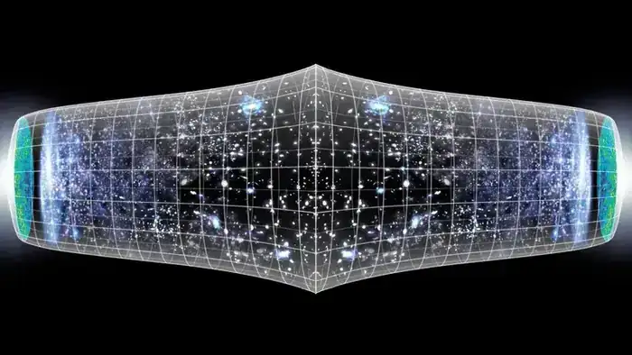
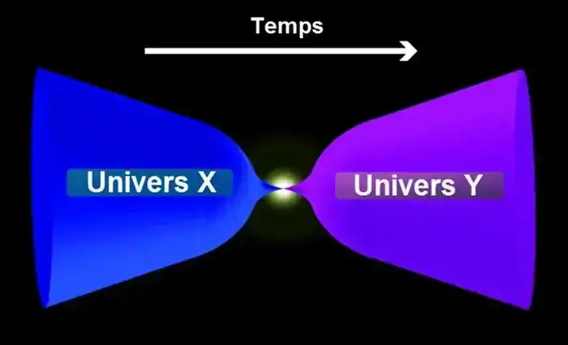

The idea
A bounce cosmology replaces the initial singularity with a contraction that reverses into the expansion we see. Two main routes exist: loop quantum cosmology, in which quantum geometry provides a repulsive force at high density, and the ekpyrotic model, in which the visible universe is one of two branes that collide.
Maps, diagrams and images




The motivation is that a singularity is where the theory stops, so a model that avoids it is doing less violence to the physics — and because a bounce can, in principle, leave observable traces.
What would show it
A bounce imprints on the cosmic microwave background in specific ways: a suppression of large-scale power, a particular non-Gaussianity, or a preferred direction. Planck's measurements have constrained these, and have not found the signatures the models predicted in their simplest forms. The models have been adjusted in response, which is the normal and slightly worrying life of a cosmological idea.
Documented: the models, their mathematics, and their predictions.
Constrained: by the CMB — the simplest versions are disfavoured.
Not excluded: the class of models, which is large.
Not observed: any bounce signature, or any evidence that the universe contracted.
The honest label: live debate in the technical literature, with no observational support yet.
Why it is in the archive
Because it is the archive's example of a claim that is entirely respectable and entirely unevidenced, and because the difference between that and a fringe claim is where it is published, not how it sounds.
Open resources on this topic
- BookThe Big Bounce — Tevis, Walter S. (Internet Archive, free to read)
- BookThe big bounce — Leonard, Elmore, 1925-2013 · 1986 (Internet Archive, free to read)
- BookThe Big Bounce in Rainbow Universe — ['Yi Ling', 'Qingzhang Wu'] · 2010 (Internet Archive, free to read)
- PapersOpen-access articles: DOAJ · PubMed Central · Internet Archive Scholar
- BooksPublic-domain and borrowable copies: Open Library · Project Gutenberg · Google Books
Cite this page
Momin, S. (2026). The Big Bounce. The Larger World Archive. https://drsamonline.github.io/LARGE_GLOBE/big-bounce.htmlMomin, Sohil. “The Big Bounce.” The Larger World Archive, 2026, https://drsamonline.github.io/LARGE_GLOBE/big-bounce.html.Momin, Sohil. “The Big Bounce.” The Larger World Archive, 2026. https://drsamonline.github.io/LARGE_GLOBE/big-bounce.html.@misc{the2026big,
author = {Momin, Sohil},
title = {The Big Bounce},
year = {2026},
howpublished = {The Larger World Archive},
url = {https://drsamonline.github.io/LARGE_GLOBE/big-bounce.html},
note = {Last reviewed 20 November 2026}
}Last reviewed 20 November 2026 · Corrections policy · this page is not peer reviewed
Sources for this page
- Wikipedia, “Big Bounce” — the idea and its variantsen.wikipedia.org
- Wikipedia, “Loop quantum cosmology” — the main routeen.wikipedia.org
- Wikipedia, “Ekpyrotic universe” — the brane-collision versionen.wikipedia.org
- Wikipedia, “Cosmic microwave background” — where the test livesen.wikipedia.org